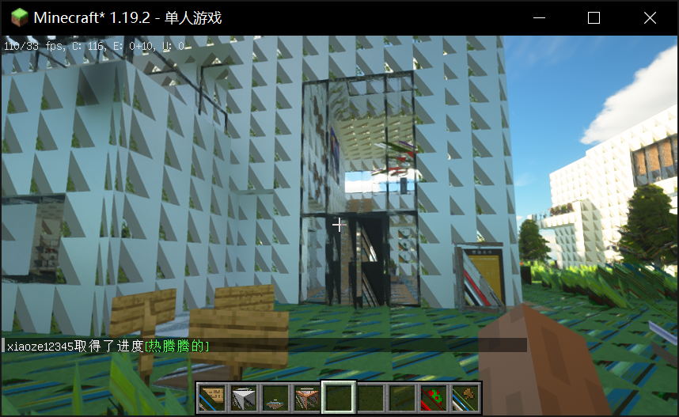
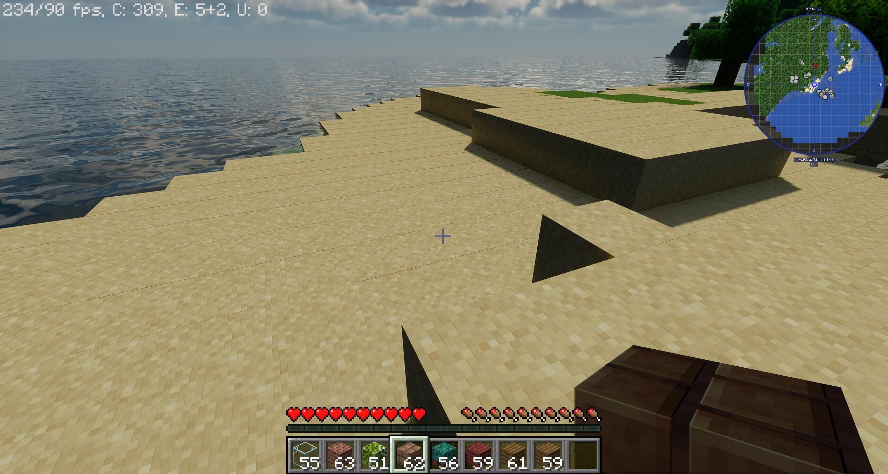
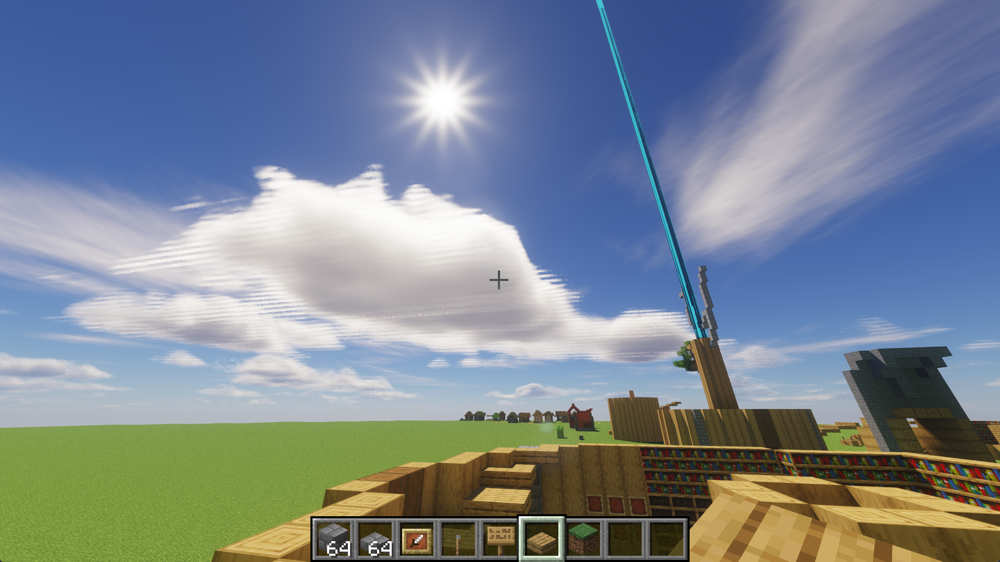
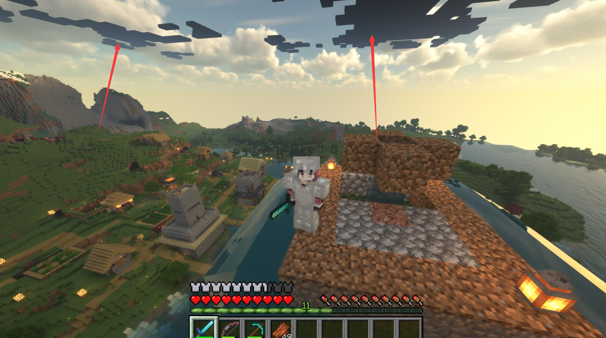
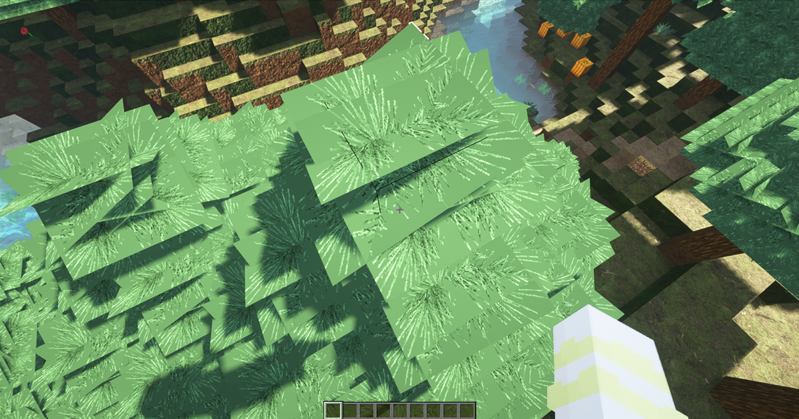
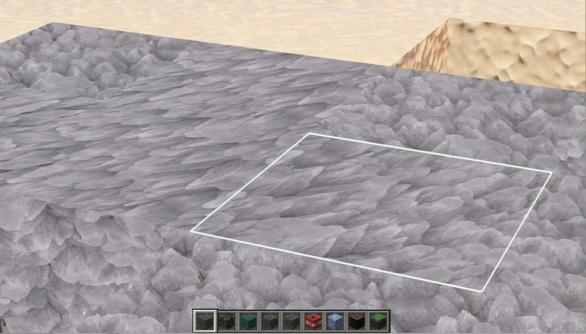

视频设置和相关显示问题
这篇文档列出了整个视频设置选项卡中容易出现问题的设置以及修改建议。
- 图像品质
这个选项是统一设置，它影响
细节选项卡中所有设置为默认的图形品质，但当它们更改时，会覆盖掉此选项。- 亮度
控制原版光照的亮度。
- 最大帧率
大多数现代光影都使用了时间性效果，如 TAA。帧率锁在过低的值上可能导致拖影。
子选项卡
- Mipmap 级别
决定远处纹理的过滤分级数量，有时会在 JE 1.19 以上的 OptiFine 中破坏光影包。
比如所有方块的面都被从对角线切割成了两个三角形，并且有一半的三角形被对角线的平行线填充，或者方块边缘出现细线。
MipMap 还会破坏一些光影的自发光渲染。一旦光影支持自发光，视差所有凹下去的地方边缘都会异常发光。
  - Mipmap 类型
决定远处纹理的过滤方法，越高的值在各级过渡之间越平滑。只在 Mipmap 级别不为
关的时候有效。- 各向异性过滤
有时会破坏着色器的纹理采样（特别是体素和 3D 噪声）。
 - 连接纹理
当资源包兼容时会让相邻方块产生相互关联的纹理，可能会破坏视差。
- 自然纹理
它会随机旋转某些方块的表面纹理，可能会破坏一些老光影上的视差。
- 自定义天空
使用 OptiFine 自定义天空的资源包与大多数修改了天空的光影不兼容。
- 云
原版云总是不能与光影包兼容，特别是在旧版本中。
 - 树
流畅会导致树叶的透明度被禁用，从而无法正常裁切 。这对使用自定义模型的资源包影响尤为严重。 - 天空
控制是否启用原版资源包天空贴图。
- 替选方块
使用资源包中定义的随机纹理进行替换来减少重复感。这有时会破坏视差，使贴图产生拉伸的奇怪效果 ，同时聊天栏报告代码
1281的 OpenGL 渲染错误。
- 区域渲染
这个选项长期未维护，可能在长渲染距离下降低性能。
- 平滑 FPS
这个选项通过降低帧率来提升 FPS 稳定性。
- 快速渲染
这有时会以不可预知的方式破坏光影包。
- 抗锯齿
会在光影渲染结束后额外添加一层抗锯齿效果来平滑画面。
- 法线贴图／高光贴图
禁用它们可能会让光影产生未知错误。
- 渲染精细度
控制游戏的内部渲染分辨率，与 GUI、窗口大小和屏幕分辨率大小独立。
高于 1x 的设置会放大内部分辨率并进行超级采样，这可以用作 SSAA 抗锯齿。但是可能造成性能问题。
低于 1x 的设置会导致画面模糊，但是可以提升性能。
- 阴影精细度
控制阴影贴图的分辨率。
- 经典光效
经典光效会强制在各种表面上应用原版光照和环境光遮蔽。大多数光影通常会提供更好的光照效果，通常也会在配置中禁用该选项。